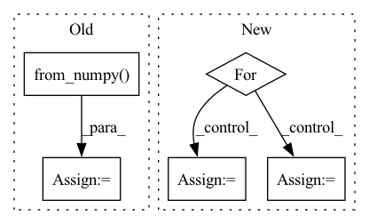

Pattern ID :11833
Before Change
mmg = mask[i].squeeze()
data[i] = cv2.warpAffine(img, M, (W, H), flags=cv2.INTER_CUBIC).reshape(C, H, W)
mask[i] = cv2.warpAffine(mmg, M, (W, H), flags=cv2.INTER_CUBIC).reshape(C, H, W)
T_aug += [torch.from_numpy( get_transform(0, 0, -rot)) ]
else:
T_aug += [torch.from_numpy(np.identity(4, dtype=np.float32))]
batch["data"] = torch.from_numpy(data)After Change
for i in range(batch_size):
rot = np.random.uniform(-rot_max, rot_max)
T = get_transform(0, 0, -rot)
for j in range(1, window_size):
k = j + i * window_size
img = data[k].squeeze()
mmg = mask[k].squeeze()
M = cv2.getRotationMatrix2D((W / 2, H / 2), rot * 180 * j / np.pi, 1.0)
data[i] = cv2.warpAffine(img, M, (W, H), flags=cv2.INTER_CUBIC).reshape(C, H, W)
mask[i] = cv2.warpAffine(mmg, M, (W, H), flags=cv2.INTER_CUBIC).reshape(1, H, W)
T_21[i - 1] = np.matmul(T, T_21[i - 1])
batch["data"] = torch.from_numpy(data)
batch["mask"] = torch.from_numpy(mask > 0.5).type(batch["data"].dtype) // make into a binary mask
batch["T_21"] = torch.from_numpy(T_21)In pattern: SUPERPATTERN
Frequency: 4
Non-data size: 5
Instances Fragment ID: 39817053
Project Name: utiasasrl/hero_radar_odometry
Commit Name: 69b518ec294c236dc4305129ec07282c5d2e007c
Time: 2021-03-04
Author: keenburn2004@gmail.com
File Name: datasets/transforms.py
M Class Name: AnonimousClass
N Class Name: AnonimousClass
M Method Name: augmentBatch(2)
N Method Name: augmentBatch(2)
M Parent Class:
N Parent Class:
M File Name: datasets/transforms.py
N File Name: datasets/transforms.py
M Start Line: 8
M End Line: 28
N Start Line: 10
N End Line: 29
Before Change
image = cv2.cvtColor(image, cv2.COLOR_RGB2BGR)
image = torch.from_numpy( (image / 255).transpose(2, 0, 1)) .unsqueeze(0).float()
if prev_mask is None:
mask = torch.zeros_like(image[:, :1, :, :])
else:After Change
def forward(self, rgb_np_img, clicks, img_md5):
input_point = []
input_label = []
for click in clicks:
x = click[0]
y = click[1]
input_point.append([x, y])
input_label.append(click[2])
Fragment ID: 39817117
Project Name: sanster/lama-cleaner
Commit Name: a6aec566d963e67c17c0871dca1c89d26e1cdcaa
Time: 2023-04-06
Author: cwq1913@gmail.com
File Name: lama_cleaner/plugins/interactive_seg.py
M Class Name: InteractiveSeg
N Class Name: InteractiveSeg
M Method Name: forward(4)
N Method Name: forward(4)
M Parent Class: BasePlugin
N Parent Class: BasePlugin
M File Name: lama_cleaner/plugins/interactive_seg.py
N File Name: lama_cleaner/plugins/interactive_seg.py
M Start Line: 242
M End Line: 264
N Start Line: 48
N End Line: 75
Before Change
mmg = mask[i].squeeze()
data[i] = cv2.warpAffine(img, M, (W, H), flags=cv2.INTER_CUBIC).reshape(C, H, W)
mask[i] = cv2.warpAffine(mmg, M, (W, H), flags=cv2.INTER_CUBIC).reshape(C, H, W)
T_aug += [torch.from_numpy( get_transform(0, 0, -rot)) ]
else:
T_aug += [torch.from_numpy(np.identity(4, dtype=np.float32))]
batch["data"] = torch.from_numpy(data)After Change
for i in range(batch_size):
rot = np.random.uniform(-rot_max, rot_max)
T = get_transform(0, 0, -rot)
for j in range(1, window_size):
k = j + i * window_size
img = data[k].squeeze()
mmg = mask[k].squeeze()
M = cv2.getRotationMatrix2D((W / 2, H / 2), rot * 180 * j / np.pi, 1.0)
data[i] = cv2.warpAffine(img, M, (W, H), flags=cv2.INTER_CUBIC).reshape(C, H, W)
mask[i] = cv2.warpAffine(mmg, M, (W, H), flags=cv2.INTER_CUBIC).reshape(1, H, W)
T_21[i - 1] = np.matmul(T, T_21[i - 1])
batch["data"] = torch.from_numpy(data)
batch["mask"] = torch.from_numpy(mask > 0.5).type(batch["data"].dtype) // make into a binary mask
batch["T_21"] = torch.from_numpy(T_21) Fragment ID: 39817049
Project Name: utiasasrl/hero_radar_odometry
Commit Name: 69b518ec294c236dc4305129ec07282c5d2e007c
Time: 2021-03-04
Author: keenburn2004@gmail.com
File Name: datasets/transforms.py
M Class Name: AnonimousClass
N Class Name: AnonimousClass
M Method Name: augmentBatch(2)
N Method Name: augmentBatch(2)
M Parent Class:
N Parent Class:
M File Name: datasets/transforms.py
N File Name: datasets/transforms.py
M Start Line: 8
M End Line: 28
N Start Line: 10
N End Line: 29
Before Change
x_test = dataset.prepare("test", col_set="feature")
index = x_test.index
x_test = torch.from_numpy( x_test.values) .float()
x_test = x_test.to(self.device)
self.sfm_model.eval()
with torch.no_grad():After Change
sample_num = x_values.shape[0]
preds = []
for begin in range(sample_num)[::self.batch_size]:
if sample_num-begin<self.batch_size:
end = sample_num
else:
end = begin + self.batch_size
x_batch = torch.from_numpy(x_values[begin:end]).float()
if self.device != "cpu":
x_batch = x_batch.to(self.device) Fragment ID: 39817045
Project Name: microsoft/qlib
Commit Name: 64b7748033326b0aaa3c4c907ccd9b2d353d553d
Time: 2020-11-25
Author: haouyw2@gmail.com
File Name: qlib/contrib/model/pytorch_sfm.py
M Class Name: SFM
N Class Name: SFM
M Method Name: predict(2)
N Method Name: predict(2)
M Parent Class: Model
N Parent Class: Model
M File Name: qlib/contrib/model/pytorch_sfm.py
N File Name: qlib/contrib/model/pytorch_sfm.py
M Start Line: 415
M End Line: 427
N Start Line: 420
N End Line: 445
Before Change
print("".join(cn_sent))
// 将当前以单词id表示的英文句子数据转为tensor，并放如DEVICE中
src = torch.from_numpy( np.array(data.dev_en[i])) .long().to(DEVICE)
// 增加一维
src = src.unsqueeze(0)
// 设置attention mask
src_mask = (src != 0).unsqueeze(-2)
// 用训练好的模型进行decode预测
out = greedy_decode(model, src, src_mask, max_len=MAX_LENGTH, start_symbol=data.cn_word_dict["BOS"])
// 初始化一个用于存放模型翻译结果句子单词的列表
translation = []
// 遍历翻译输出字符的下标（注意：开始符"BOS"的索引0不遍历）
After Change
res = []
with torch.no_grad():
// 在data的英文数据长度上遍历下标
for batch in tqdm(data):
// 待翻译的英文句子
en_sent = batch.src_text
// 对应的中文句子
cn_sent = batch.trg_text
// 打印模型翻译输出的中文句子结果
for i in range(len(en_sent)):
src = batch.src[i]
// 增加一维
src = src.unsqueeze(0)
// 设置attention mask
src_mask = (src != 0).unsqueeze(-2)
// 用训练好的模型进行decode预测
decode_result = greedy_decode(model, src, src_mask,
max_len=config.max_len).squeeze().tolist()
// 模型翻译结果解码
translation = sp_chn.decode_ids(decode_result)
Fragment ID: 39816960
Project Name: hemingkx/chinesenmt
Commit Name: 9adf53cb6d9b875c9d173643a8d266d49d6f90eb
Time: 2020-12-15
Author: hemingkx@gmail.com
File Name: train.py
M Class Name: AnonimousClass
N Class Name: AnonimousClass
M Method Name: evaluate(2)
N Method Name: evaluate(2)
M Parent Class:
N Parent Class:
M File Name: train.py
N File Name: train.py
M Start Line: 53
M End Line: 84
N Start Line: 67
N End Line: 95